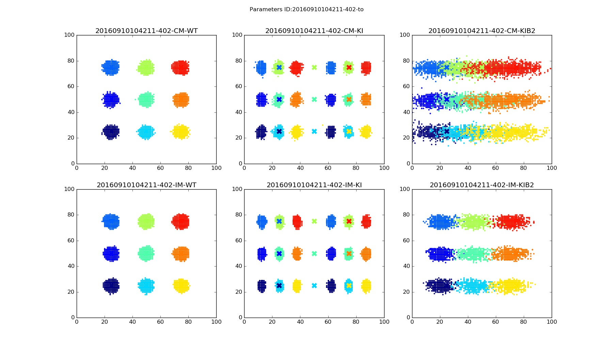
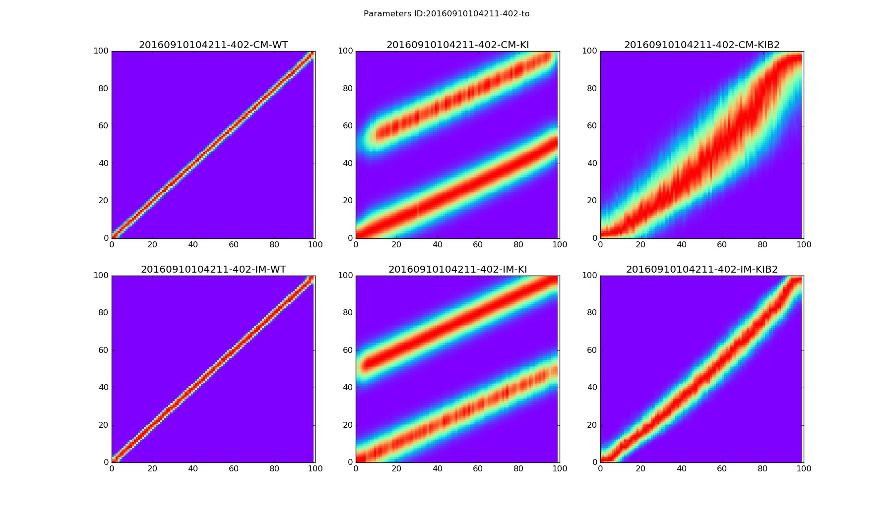
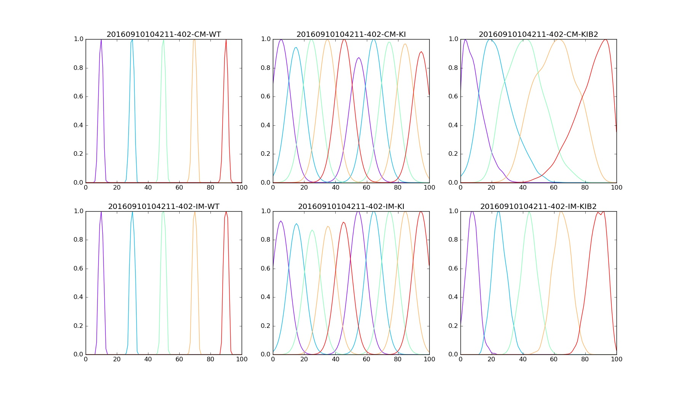

To use theses scripts you need python libraries:
To run simulations with small number of steps Nstep=2000 (requires around 4 hours on a desktop):
Same simulations but with a progress indicator(requires around 4 hours on a desktop):
To run simulations with the same number of steps as in the paper (manuscript) Nstep=15000 (requires around 16-20 hours on a desktop):
To run simulations with the same number of steps as in the paper (manuscript) and with a progress indicator (requires around 16-20 hours on a desktop):
Do not simulate but plot graphs from existed database:
Any command above should show three figures with 6 plots each. Each plot on a figure corresponds to particular model and mice mutant.
| Correlational model - Wiled Type | Correlational model - IslEphA/EphA | Correlational model - IslEphA/EphA / β2-/- | ||
| Integrational model - Wiled Type | Integrational model - IslEphA/EphA | Integrational model - IslEphA/EphA / β2-/- |
The accuracy of connectivity pattern depends on the number of steps. Figures below are examples for Nstep=15000.
| Termination points  |
Density distribution  |
Density Samples  |
Files in this directory
| EnergyChaser.pyx | Cython main code |
| EnergyModel.py | Python parameters parser and EnergyChaser wrapper |
| steup.py | Setup script for the Energy Model and Chaser |
| 2D-View.py | - plots 2D terminal zones | 1D-DensityView.py | - plots 1D density distribution of terminal zones along an NT or DV axis | runsimulation.sh | - helper script | 20160910104211-402-tot.db.gz | An example of simulation result for Nstep=15000 |